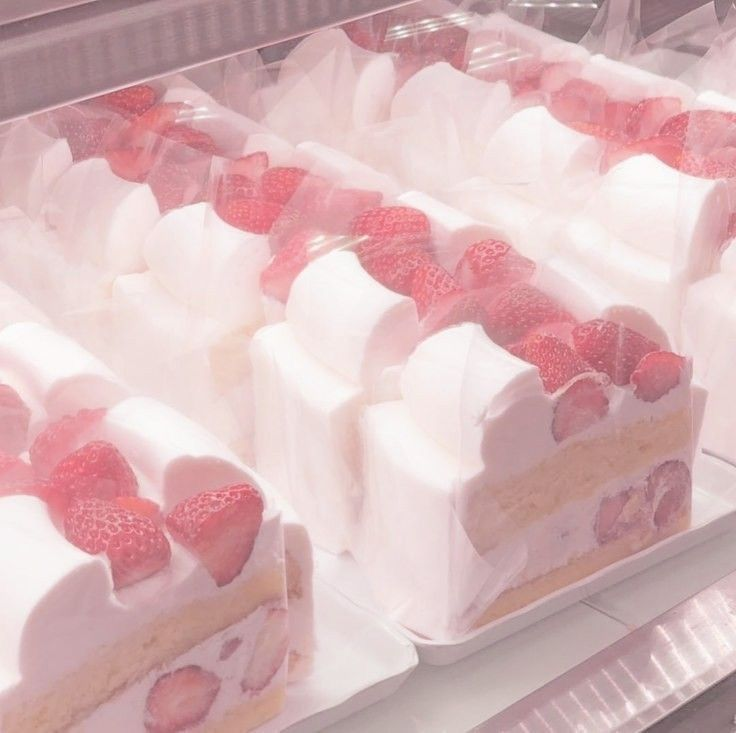
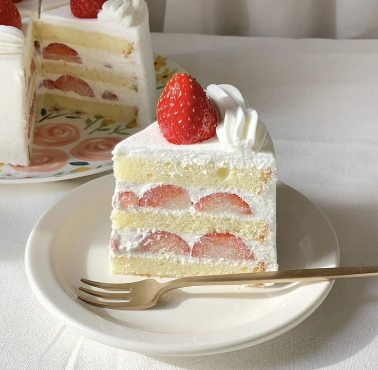

.jpeg)


Strawberry Shortcake is een klassiek en verfrissend dessert dat bestaat uit luchtige, zachte shortcake biscuitjes, sappige aardbeien gemengd met een beetje suiker, en romige, zoete slagroom. Samen vormen ze een heerlijke balans tussen zoet en fris, perfect voor een zomerse dag of een feestelijke afsluiting van een maaltijd.
Ingrediënten
Voor de aardbeienvulling ୧ ‧₊˚ 🍓 ⋅ ☆
- 500 g verse aardbeien
- 2 eetlepels kristalsuiker
- 250 ml slagroom
- 1 theelepel vanille-extract
- 1 eetlepel poedersuiker
- 1 theelepel citroensap (optioneel)
Voor de biscuit ˙ . ꒷ 🍰 . 𖦹˙—
- 250 gram bloem
- 50 gram suiker
- 1 eetlepel bakpoeder
- 1/2 theelepel zout
- 115 gram koude boter, in blokjes
- 180 ml melk
- 1 theelepel vanille-extract
Bereiden
1. Aardbeien 🍓
Meng de aardbeien met suiker in een kom. Laat 20–30 minuten staan tot er licht sap ontstaat.
2. Biscuit 🍰
- Oven voorverwarmen op 200°C.
- Bloem, suiker, bakpoeder en zout mengen.
- Koude boter in het mengsel wrijven tot grove kruimels.
- Karnemelk + vanille toevoegen; mengen tot een zacht deeg.
- Met een lepel hoopjes deeg op bakplaat scheppen.
- 12–15 min bakken tot licht goud. Afkoelen.
3. Slagroom ִֶָ་༘࿐
Slagroom, poedersuiker en vanille kloppen tot zachte pieken.
Serveren 🍽️
Serveer op een licht bord, met een paar losse aardbeien, een vleugje poedersuiker en misschien een eetbaar bloemetje — alsof je een klein stukje lente op tafel zet.

